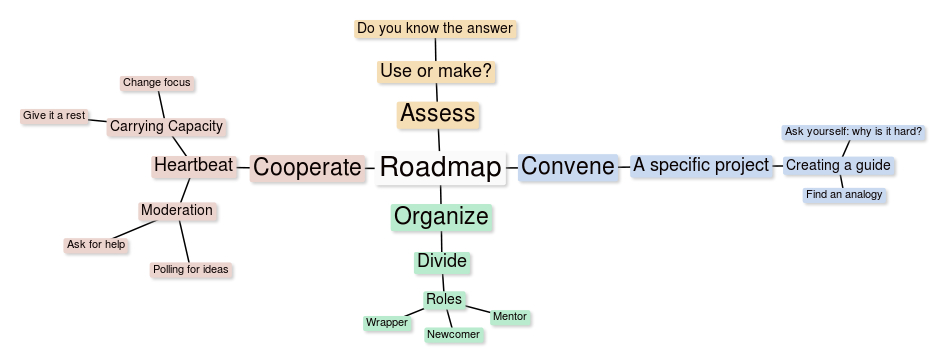

Although a grounding in learning theory helps inform peer learning projects, Peeragogy, at its core, comes to life in applied practice. Even before convening a group for your peer learning project (discussed in Part IV), you will want to take a look over the patterns we have collected. You will likely return here many times as your project develops.
What is a pattern?
A pattern is anything that has a repeated effect. In the context of peeragogy, the practice is to repeat processes and interactions that advance the learning mission. Frequent occurrences that are not desirable are called anti-patterns!
Christopher Alexander: “Each pattern describes a problem which occurs over and over again in our environment, and then describes the core of the solution to that problem, in a way that you can use this solution a million times over, without ever doing it the same way twice.” [1]
Patterns provide a framework that can be applied to similar issues but may be metaphorically solved in different ways, sometimes in real world or face to face events and other times in digital space. Outside of Alexander’s own work in architecture, one the first groups to adopt a design pattern way of thinking about things were computer programmers. Writing in the foreward to Richard P. Gabriel’s Patterns of Software, Alexander emphasizes that the key question to ask about any design approach is: does it help us build better?
Christopher Alexander: “What is the Chartres of programming? What task is at a high enough level to inspire people writing programs, to reach for the stars?” [2]
We think that Peeragogy stands a good chance of being a “killer app” for pattern-based design. Learning bridges physical and virtual worlds all the time. And, in fact, a Network of Learning was the 18th pattern that Christopher Alexander introduced in his book, A Pattern Language.
Christopher Alexander: “Work in piecemeal ways to decentralize the process of learning and enrich it through contact with many places and people all over the city: workshops, teachers at home or walking through the city, professionals willing to take on the young as helpers, older children teaching younger children, museums, youth groups travelling, scholarly seminars, industrial workshops, old people, and so on.” [1]
Peeragogy can help to extend and enrich this network, and, as we shall see, patterns can be used by those involved to do ongoing “emergent” design, not only by building new structures, but by adapting and improving our catalog of patterns as we go. For consistency, and easy use, adaptation, and extension we present the patterns using the following template. The format is meant to be neutral and easy to work with – it’s, intentionally, an outline that you might use to write a short abstract describing an active project.
Title: Encapsulate the idea - possibly include a subtitle
Context: Describe the context in which it is meaningful. What are the key forces acting in this context?
Problem: Explain why there’s some issue to address here.
Solution: Talk about an idea about how to address the issue.
Rationale: Why do we use this solution as opposed to some other solution?
Resolution: How are the key forces resolved when the solution is applied?
What’s Next: Talk about specific next steps. How will the active forces continue to resolve in our project?
Patterns optionally include the following optional elements:
[Examples: Present example(s) that have been encountered, if this aids comprehension.]
[References: Citations, if relevant.]
The “What’s Next” section concretely links the patterns we discuss here to the Peeragogy project. It can be thought of as an annotation rather than part of the pattern itself. If you adapt the patterns for use in your own project, you’re likely to have a different set of next steps. Although we think that these patterns can be generally useful, they aren’t useful in the abstract, but rather, as a way for discussing what we actually do.
A peeragogy pattern language
By looking at how patterns combine in real and hypothetical use cases, you can start to identify a pattern language that can be used in your projects. We can get a simplified view of these connections with the following diagram. It’s important to clarify that everyone doesn’t do it the same way. Here, the Roadmap is given a central position, but some peer learning projects will forego making a specific, detailed plan; their plan is just to see what develops. You can see here how peeragogy patterns often break down further into individual micro-steps: we’ll say more about that shortly.

The subsequent main sections of this book – Convene, Organize, Cooperate and Assess (for short) – represent big clusters of patterns that are likely to come up time and again in various projects. We can think of these as East, South, West, and North in the diagram above. You are encouraged to invent your own patterns and to connect them in new ways. You’ll probably find quite a few that we didn’t include in the catalog. Each project has a unique design, and it’s own unique way in which things play out in practice. What we’ve put together here is a starter kit. The peeragogy patterns suggest a social way to do problem solving [3], but once you get used to the pattern concept you can use it to identify new problems no one has ever thought of before, and that’s even more powerful!
References
-
Alexander, C., Ishikawa, S., and Silverstein, M. (1977). A Pattern Language: Towns, Buildings, and, Construction, New York: Oxford University Press.
-
Gabriel, Richard P. (1996). Patterns of Software, New York: Oxford University Press. (Includes a foreward by Christopher Alexander.)
-
Minsky, Marvin. (2008–2009). Essays on Education (for OLPC), Massachusetts Institute of Technology Media Lab whitepaper, Available online.